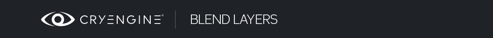

Обзор
Разделы
Функция смешивания слоев позволяет смешивать второй набор текстур с базовым набором, чтобы получить больше вариаций на плиточных поверхностях. Смешение в основном основано на вершинном альфа-канале и общей карте смешивания. Вершина альфа определяет, где на поверхности сетки должен быть виден слой смешивания. Независимо от геометрической мозаики, вы можете добиться как плавных, так и очень резких переходов между слоями. Небольшого количества вершин достаточно для получения хороших результатов.
Очень полезная функция слоя смешивания заключается в том, что в качестве карты смешивания можно использовать карту высот. Это заставляет смешивание повторять структуру базовой текстуры.
3ds Max Настройка объекта
Добавьте в стек модификатор рисования вершин и измените канал на вершину альфа. Это очень важно отделить, так как для этой функции вы должны использовать вершину альфа, а не цвет вершины.
Откройте окно свойств объектов актива и включите отображение цвета вершин, но измените отображение на вершину альфа. Чтобы быть уверенным, что вы не рисуете не тот канал, вы всегда можете переключаться туда и обратно в режим предварительного просмотра цвета вершин.
Все текстуры тайловые и не используют уникальные оболочки UV. В этом случае вы не можете использовать запеченную фоновую карту OCC, но все же можно использовать запеченные цветные тени вершин на активе.
Настройка вершины альфа в 3ds Max.
Вы можете использовать наш шейдер смешивания для 3ds Max не только для предварительного просмотра результата, но и для рисования альфа-вершины в реальном времени.
Откройте редактор материалов и переключите стандартный материал на шейдер DirectX, где вместо этого вы можете загрузить шейдер слоя наложения и получить все аналогичные параметры редактора песочницы для настройки значений.
Шейдер смешивания слоев для предварительного просмотра в 3ds Max.